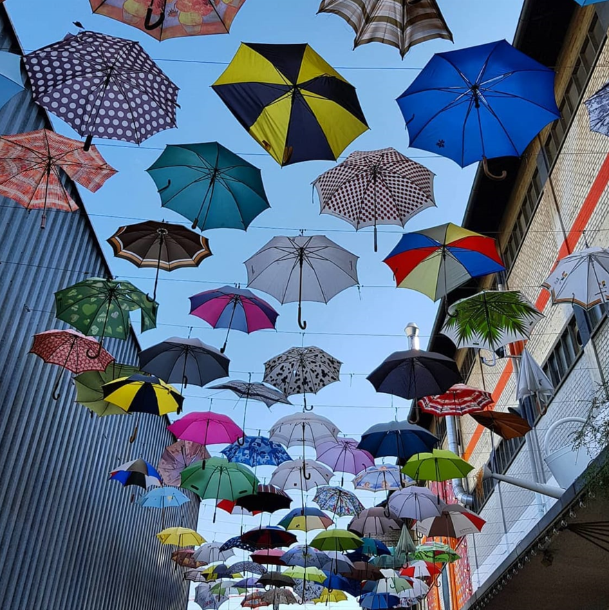

< 취리히 >
취리히는 스위스의 경제와 교육의 중심지이다.
유럽의 심장부에 위치해 대도시의 현대적인 시설과 자연을 모두 즐길 수 있다.
수 년 동안 삶의 질에 있어서 세계 최고의 도시로 선정되기도 했으며, 작고 컴팩트함에도 불구하고 모든 것을 찾아볼 수 있는 도시이다.
< 빈터투어 미술관 - The Kunstmuseum Winterthur >
빈터투어 미술관은 스위스에서 가장 아름다운 현대 미술 컬렉션을 소장하고 있다.
이 곳에서는 모네, 반 고흐, 칸단스키, 피카소 등 유명 작가의 작품을 만날 수 있다.
기존 건물과 상반된 건축적 특징을 보이는 신식 건물에서는 아직 잘 알려지지 않은 아티스트의 작품을 전시한다.
< 반호프슈트라세 - Bahnhofstrasse >
중앙 철도역에서 호수까지 1.4km에 걸쳐 뻗어 있는 반호프슈트라세는 전세계에서 가장 유명한 쇼핑의 거리 중 한곳이다.
이 곳은 카르티에, 프라다, 샤넬과 같은 유명 디자이너 매장이 가득한 거리이다.
반호프슈트라세의 남쪽 끝부분에는 취리히 호수에서 가장 가까운 마을 광장인 파라데플라츠가 있다.
이 광장은 1836년에 지어진 호화로운 초콜릿 공장인 콘피세리 슈프륑글리로 유명하다고 한다.
< 그로스뮌스터 - Grossmünster >
그로스뮌스터는 16세기 스위스의 개신교 종교 개혁의 중심이었던 도시의 가장 중요한 교회 중 하나이다.
이 로마네스크 양식의 대성당은 1230년에 지어졌고, 취리히의 수호 성인인 펠릭스와 레굴라의 무던에 세워진 것으로 추정된다고 한다.
종교 개혁 박물관이 교회 회랑에 자리하고 있으며, 지하실에는 계절별로 미술 전시회와 문학 행사를 개최한다고 한다.
약 5프랑을 내면 칼슈투름 타워 꼭대기까지 올라가 취리히와 글라루스 알프스의 탁 트인 전망을 볼 수 있다.
< 리터파크 - Rieter park >
도시 최대의 도시 공원인 리터파크는 취리히 호수 근처의 70,000m²의 녹지 공간에 조성되었다.
피크닉, 조깅, 스포츠 등 레크리에이션 활동을 위해 인기 있는 장소이며, 공원의 분수대 주변 지역에서는 여름철에 클래식 콘서트가 열리기도 한다.
취리히 호수 위의 녹색 언덕 위에 자리 잡은 리트부르크 박물관은 인상적인 네오클래식 양식 저택에 있는데,
오늘날 이 박물관은 티베트 청동, 인디안 미니어처, 아즈텍 조각을 비롯한 비 유럽 작품을 전시하고 있다.
< 취리히 웨스트 - Zurich West >

한때 배를 만들고, 모터를 조립하던 장소는 이제 화려한 도시의 라이프 스타일을 뽐낸다.
우선 코스 서쪽에 있는 취리히의 새로운 프라임 타워(Prime Tower)는 스위스 내에서 두 번째로 높은 건물에 속한다.
또한, 레스토랑과 바를 갖춘 매력적인 도시 정원인 프라우 게롤즈 가르텐(Frau Gerolds Garten)과 이웃한 프라이탁 컨테이너 타워(Friday container tower)가 있다.
마지막으로 아치 모양의 육교 아래로 난 길을 따라 여유롭고 기분 좋은 산책을 즐길 수 있다.
이 구역을 돌아다니다 보면 장소마다 굉장히 변화무쌍하며, 새로운 명소들과 옛 명소들이 많다는 것을 깨닫게 된다.